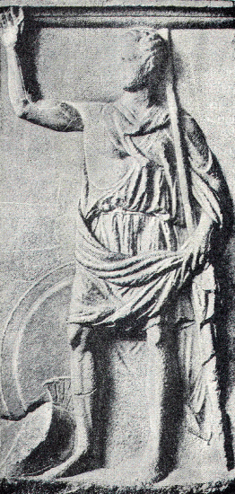

The Persian province of Armenia was divided from the land of the Carduchians by the river Kentrites. It was a fertile country, but for a distance of nearly twenty miles from the river there were no villages nor cultivated land, because the Armenians were determined that there should be nothing to tempt their warlike neighbours, the Carduchians, to enter their country in search of plunder.
The news that the Hellenes were approaching had reached them, and on the further side of the river, Persian cavalry were already keeping guard along the shore. Infantry also were posted beyond, in the more hilly part of the country. Notwithstanding this, however, since there was no way of getting round the river, the Hellenes were determined, if possible, to wade through it, in defiance of the Persian troops.
But on stepping into the river, they found that the water was breast deep, and that the stream had a very rapid current, which swept to one side the great shields they carried to protect them in front, so that they were exposed to the arrows and darts of the enemy. They could indeed, by lifting the shields out of the water and holding them above their heads, protect themselves to some extent, but not sufficiently to be out of danger. Besides this, the ground at the bottom of the river was strewn with great stones, so slippery that they could not get any certain footing, and were in constant danger of falling. And in addition to everything else, they now perceived, at the edge of the mountainous country which they had just quitted, a band of armed Carduchians, who were evidently only waiting for the moment when they should be occupied in crossing the river, to come and attack them in the rear.
The position was most embarrassing, and they could not tell what to do for the best. Being urgently in need of rest, they resolved to remain where they were for that day, and encamp at night in the same place as on the previous evening. The Carduchians continued at their post until dark, and then retreated to their nearest villages.
That night Xenophon had a dream. He thought that he was bound with fetters, but suddenly the fetters fell off, and he could move his limbs freely. Thereupon he awoke, with the firm conviction that the dream had been sent from the gods, to signify that they would provide a way of escape from the present difficulty.
Early in the morning he went to Cheirisophus to tell him of the dream, and of his interpretation of it; and both generals agreed to have sacrifices offered, that by means of the omens they might know yet more surely the will of the gods. At the very first, the omens were favourable, and now they felt certain that the gods would not fail to work out their deliverance, though how it was to be accomplished they did not as yet know.
They had not however long to wait, for whilst they were still eating their breakfast, two young soldiers came running into the camp to tell the generals of a discovery that they had made.
"We were looking for fuel," they said, "a good way up the stream, when we saw a man, a woman, and two girls, who seemed to be entering a cave among the rocks. So we tried the water in that place, and found that it flows much more quietly than here, and we went right over to the other side, for the country there is hilly, so that we were protected from the enemy's cavalry, and nowhere did the water come above our waists."
This was indeed welcome news, and the generals believed that it had been sent to them by the gods. In token of thankfulness they at once offered as a libation the wine of which they had been drinking, pouring it out upon the ground. And for each of the two youths they filled also a cup of wine, that they too might pour it out to the gods, and be thankful.
The other generals were summoned, and all took counsel together as to the arrangements to be made for crossing the river with the least possible loss, in spite of the enemy in front and the enemy in the rear. For with the morning light, the Carduchians had returned to their post on the high ground that formed the fringe of their country.
After some consideration the generals decided upon a plan. Guided by the two youths, the whole Hellene army marched up the river bank towards the ford, which was about half a mile from the place where they had pitched their camp. Seeing this, the Persian horsemen took the same course, and made a similar progress on the opposite bank of the river.

HOPLITE SINGING THE PAEAN.
When the Hellenes reached the ford, the priests offered a sacrifice to the god of the river, then all joined in singing the paean, or hymn of praise to the gods, and with a mighty shout, Cheirisophus and the van stepped into the stream.
But meanwhile Xenophon and his men hurried back as fast as possible to the former place, as if they intended crossing there; and this movement had the effect that had been aimed at by the generals in making their plan. For when the Persian cavalry saw that Cheirisophus was in the act of crossing above, and that Xenophon, as they supposed, was about to cross below, they were seized with panic, and fearing lest they should be shut in between the two divisions of the Hellene army, they urged their horses into a gallop, and fled away as fast as they could.
By this means Cheirisophus and the van crossed the river without hindrance, and they marched straight to the high ground where the Persian infantry were posted. The infantry however made no better stand than the other troops, for when they saw that the cavalry had fled, they followed the example of their comrades, and ran away also.
The camp-followers and the baggage animals had crossed the river behind Cheirisophus, and now, on the hither side of the Kentrites, there only remained the rear-guard commanded by Xenophon.
To enable these remaining troops to cross in safety was the last, and by no means the easiest task of the day. For the Carduchians were still behind, only waiting for the moment when they could most effectively fall upon them. Until the greater part of the men were in the water, they did not venture down from their mountains, but as soon as they saw that comparatively few of them were left on the bank, they dashed forward, as if they wished to teach the Hellenes the truth of the proverb that the last man is bitten by the dog.
But Xenophon was prepared to receive them. Before taking any notice, he allowed them to come almost within close quarters. Their arrows were even whirring already through the air when he gave a signal with the trumpets. Then the hoplites turned suddenly, and charged with rapid step, shouting the Hellene war-cry.
The Carduchians fled back into shelter as fast as they could, for they knew well that except in their own mountains they were no match for the Hellene troops. Once more the trumpets sounded forth the signal for attack, and the Carduchians fled yet faster than before, but Xenophon had previously given secret instructions to the men, that when they heard the second signal for attack, instead of obeying it they should turn back and hasten across the river as quickly as possible. This they did, and thus the crossing of the Kentrites, which in the beginning had seemed almost impossible, was accomplished by the Hellenes with little or no loss.